<!DOCTYPE html>
<html lang="de">
  <head>
    <meta charset="UTF-8">
    <meta name="viewport" content="width=device-width, initial-scale=1.0">
        <link rel="stylesheet" href="style.css">
        <title>Swipebay</title>
        <link rel="icon" type="image/x-icon" href="ui/logo2.png">
        <form action="" method="get">
            <input id="suche" class="search-input" type="text" name="q" placeholder="Suchbegriff eingeben" required>
        </form>
    </head>

<body>

    <div id="swiper">
     </div>
     
     <div id="ui_menu">
        <ion-icon id="dislike" name="close-outline"></ion-icon>
        <ion-icon id="like" name="heart"></ion-icon>
    </div>
    <div id="ui_menubar">
        <!--This line would display the previous card, but this function isn't implemented yet:--> <ion-icon id="undo" name="arrow-undo-outline"></ion-icon>
        <a href="messages.html"> <ion-icon id="message" name="chatbubbles-outline"></ion-icon></a>
    </div>
    
    <script src="card.js"></script>
    <script src="swipe.js"></script>
    <script type="module" src="https://unpkg.com/ionicons@5.5.2/dist/ionicons/ionicons.esm.js"></script>
    <script nomodule src="https://unpkg.com/ionicons@5.5.2/dist/ionicons/ionicons.js"></script>

    <footer>
        <div id="navigation">
            <a href="user.html"></a>
            <a href="add.html"></a>
            <a href="index.html"></a>
            <a href="messages.html"></a>
            <a href="heart.html"></a>
        </div>
    </footer>

</body>
</html>

